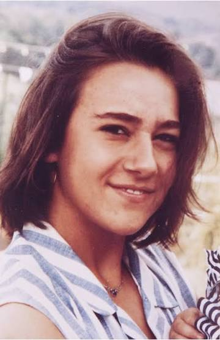
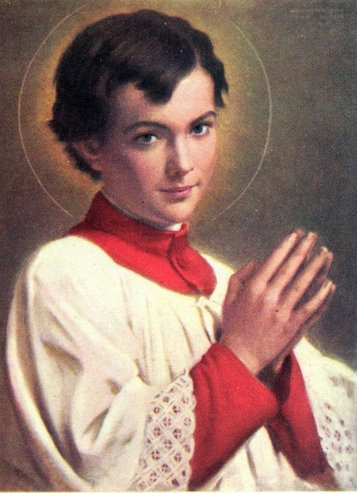
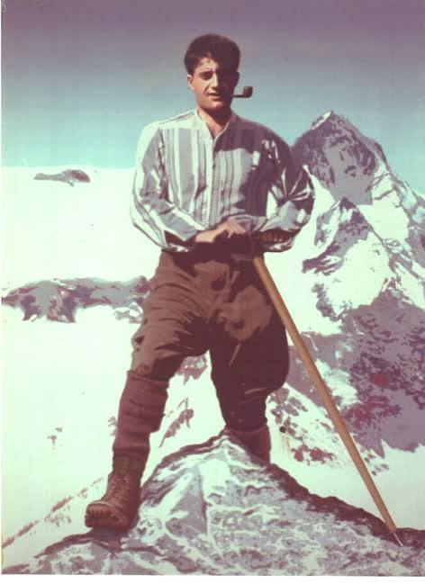
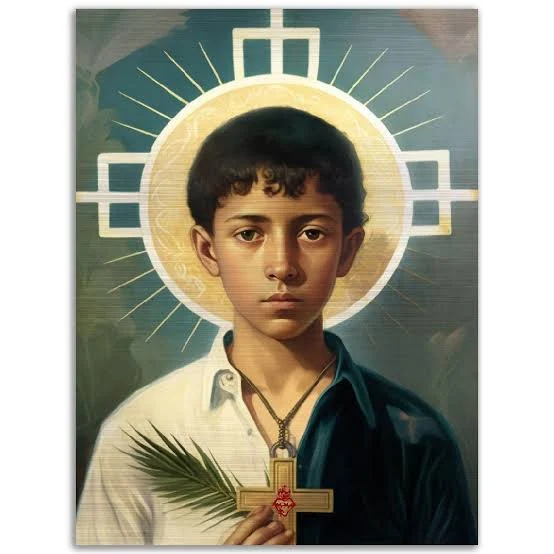
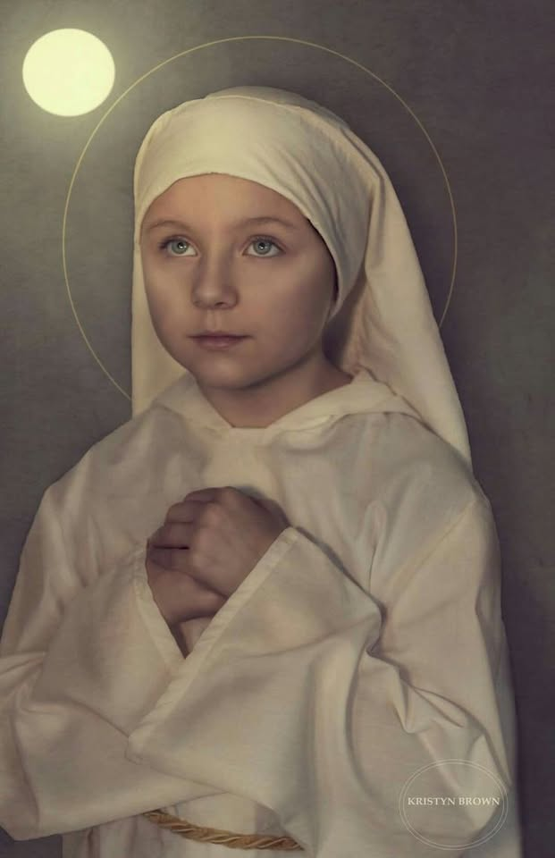
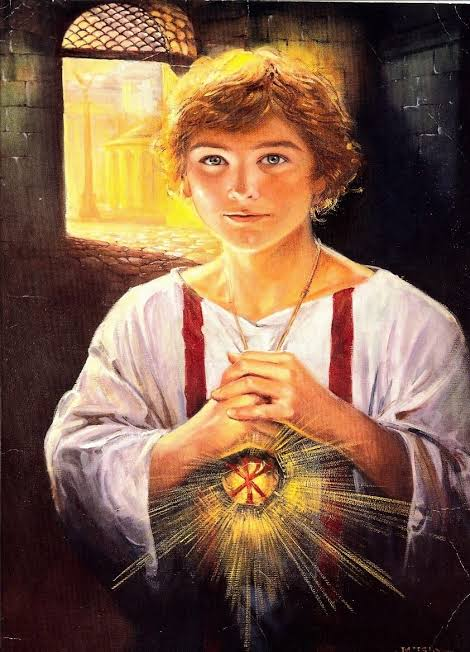
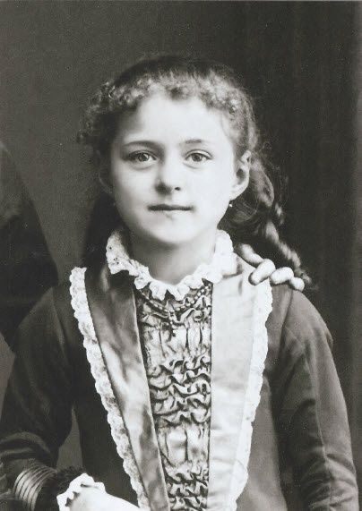

Conheça homens e mulheres que entregaram suas vidas a Cristo e mostram que a santidade continua possível nos dias de hoje.
Apaixonado pela Eucaristia e pela evangelização através da tecnologia.

Viveu a doença oferecendo sua vida a Cristo com alegria.

Discípulo de Dom Bosco e exemplo de pureza e santidade.

Jovem universitário apaixonado pelos pobres e pela Eucaristia.

Entregou sua vida defendendo Cristo durante a Guerra Cristera.

Exemplo de amor puro à Eucaristia, devoção precoce e anseio intenso por receber a comunhão..

Morreu defendendo a Santíssima Eucaristia.

Doutora da Igreja e padroeira universal das missões.
Estamos preparando as histórias dos santos.